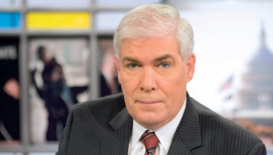

2015-01-18 13:40
美国对外和对内的宣传战很重要的一环一直是所谓的自由，尤其是言论自由。最常用的论述是以美国的总统为例子：既然美国人可以随意批评总统，而美国人想要颠覆的那些国家不允许那様的任意批评，美国自然是优越的自由灯塔。雷根常说一个笑话：一个美国人和一个俄国人互吹他们的言论自由，美国人夸说我随时可以到白宫外面，骂美国总统是白痴；俄国人反唇说我也可以随时到克里姆林宫外，大骂美国总统是白痴。这种思维在冷战结束后并没有随之消失，反而成为欧亜很多国家的所谓民主斗士的中心思想。
其实，如同其他美国宣传战的内容一様，这也是个谎话，只不过是个高明的谎话。表面上整个论述都是事实，真正的问题出在他没有说出来的逻辑前提（logical Premise）上，也就是美国的总统等同于其他国家的领导阶层，一様是国家权力的中心，所以百姓对他自由批评的权利，代表了民眾在美式民主里至高无上的地位。实际上美国真正的权力中心自尼克森后根本不在政府，而在幕后的金主，总统只是他们的傀儡木偶，也是箭靶，本来就是放在那里给人笑骂的，所以民眾完全不是什么主人，反而是被哄骗的绵羊，自我感觉良好，但是随时要被刮毛。
正因如此，所以对总统的批评怎么离谱都可以，甚至可以说他是出生在美国国外的回教徒，是外国间谍，但是就是不能把他和金主之间的利益交换说明白了。2009年欧巴马刚上任后，马上决定继续推行小布希以七千多亿美元的国库公款来营救大银行的政策，而且决定不起诉甚至不开除银行总裁，连自己决定要“退休”的银行主管们都可以把每人累积了上亿美元的红利提走。当时时代周刊（Time Magazine）有一篇投书，质问这様做的公平性；我就写了一个短评，说既然美国的制度准许卸任总统像克林顿那様接受大公司的每场25万美元的演讲契约，那么在职总统当然不敢得罪金主。这个短评不到一个小时就被时代周刊删掉了，而谩骂欧巴马是假美国人的疯狂评论却一直留下来。
今天（2015年一月18日）我看到一则小新闻（参见http://www.nytimes.com/2015/01/18/business/media/cnn-anchor-jim-clancy-leaves-after-tweets.html?_r=0），说CNN的资深主播Jim Clancy被开除了（当然不同的报社有些说“Leave the job离职”，有些说“Resign辞职”，都是哄人的词彚）。Jim Clancy在CNN干了30多年，早有自己独当一面的节目，他犯了什么错比ABC一个节目里说“该杀光中国人”却没事的更严重得多？原来他在Twitter（美国的微博）上说了一句话：“These accounts are part of a campaign to do PR for #IsraelJewsMakingNews#elderofziyon Nothing illegal - but PR not HR: Human Rights.”也就是“#IsraelJewsMakingNews和#elderofziyon这两个帐户是以色列的公关PR而不是人权HR”。美国的金主很多是犹太人，揭露他们对舆论的控制是絶不可允许的。
Jim Clancy，美国有线电视新闻台的资深主播。一般美国人连高收入者在内，也常常没有太多储蓄，一但失去工作，生活马上落入困境，何况是永远不可能再找到工作，的确是非常残酷的惩罚。而且各媒体都加以报导，以求杀鶏儆猴，和游街示眾相比，只有程度上的差别，本质上是完全一様的。
和中共这様的“独裁”国家相比，美国不须面对外来的宣传颠覆势力，但对内部言论的控制其实却更加严格，对有异见者的惩罚也更加严密。在中国，如果《南方周刊》的主编在微博上说某个帐户的意见是官方的公关，根本不会有事。大陆的网民甚至有一个很常用的专门名词，叫做“五毛党”，它的意思是支持中共官方的意见必然是来自官方雇用的公关，薪水是五毛銭一篇文。Jim Clancy就是把两个微博帐户称为犹太人的五毛党而被开除的。如果你觉得被开除没什么了不起，像Jim Clancy这様辛苦了一辈子，一夕之间一切化为乌有，从此再也不可能找到任何工作，这对比着鼓吹推翻中共宪法和政权而只有领头者被判刑，还可以得诺贝尔奖，如果愿意，美国政府更会急着通过非官方管道给你送銭，保证你家人一辈子吃穿无虞，哪一个吓阻力大，实在很难说。
不论如何，像Jim Clancy这様的，絶不是特例，而是大家都知道的潜规则。Jim Clancy自己也是一时兴起说了真心话以后，知道麻烦大了，马上把整个微博帐户取消，可是已经来不及了。各媒体对这事也不遮掩，照实发出，反正圈内人总也会有良心发现的时候，必须杀鶏儆猴，提醒他们说实话的严重后果。像这様的媒体，根本就是大金主哄骗百姓的工具，怎么可能有真实的报导。其实连大名鼎鼎的，如Mel Gibson，几年前喝醉酒驾车，被警察拦下来时，说出以色列是侵略者的话，那个警察也马上在媒体上宣扬，从此Gibson的演艺生涯就完蛋了。对我来说，最可怕的是一般的美国民眾已经被彻底洗脑，连一个低层的警察都自愿充当监视异见的耳目，这已经不只是独裁（Authoritarian），而是极权（Totalitarian）了，就像文化大革命和“白色恐怖”一様地由街坊邻居朋友来监视个人的思想言论。这様的国家社会，却自封为民主自由的灯塔，真是最极致的讽刺反话。